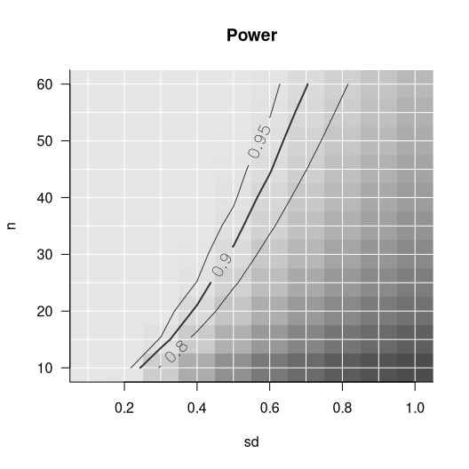

Powergrid is a package developed by Gilles Dutilh, partly funded by a Statistical programming grant from the SCTO.
The package is intended to allow users to easily evaluate a function across a grid of input parameters. The package’ utilities are aimed at performing analyses of power and sample size, allowing for easy search of minimum n (or min/max of any other parameter) to achieve a desired level of power (or any other objective). Also, plotting functions are included that present the dependency of n and power in relation to further parameters.
Note that the package is currently in (a late stage of) development. Development may be followed at Gilles’ github. You are encouraged to use the package released here on SCTO’s github, currently version v0.1.0. For replicability, make sure you explicitly refer to the current release when loading the package in your code:
devtools::install_github("SwissClinicalTrialOrganisation/powergrid",
build_vignette = TRUE)
library(powergrid)Example usage
Define a grid of parameters to evaluate a function across:
sse_pars <- list( # a simple list
n = seq(from = 10, to = 60, by = 5), # sample size
sd = seq(from = 0.1, to = 1, by = 0.1) # standard deviation
)Define a function to evaluate the parameters across the grid. The function should take the parameters as input and return a single value (e.g., power, sample size, etc.). For example, we can use the power.t.test function from the stats package to calculate power for a t-test:
PowFun <- function(n, sd){
ptt = power.t.test(n = n/2,
delta = .6,
sd = sd,
sig.level = 0.05)
return(ptt$power)
}Evaluate the function at each grid node:
power <- PowerGrid(pars = sse_pars, fun = PowFun)Display the results:
PowerPlot(power)
See the vignette for more details on how to use the package and its functions.
Please don’t hesitate making an issue above or contributing through a pull request. You may also contact Gilles by email.